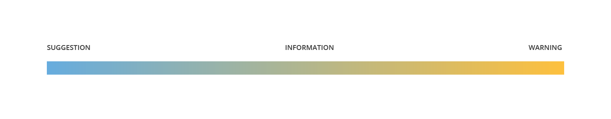
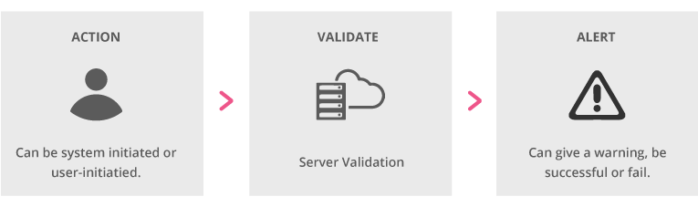

A message is a communication with the user—one that’s supposed to convey ideas and evoke a positive emotional response. When thinking about messages, it’s essential to think about the content of that communication first, before considering the proper way to style it.
In other words, messages consist of two components. First, there’s the message type, which refers to the kind of content the message needs to convey. Then, there’s the delivery system, which refers to the design element used to present that content.
In order to build an effective message, think about what the user needs to know, when they need to know it, and what delivery systems are available to convey the message.
Delivery systems are the vehicles we use to convey a message to the user. Remember, the message type—the information conveyed, the audience, the context on the page, etc.—should determine the type of delivery system used, not the other way around.
A non-dismissible container with text. For more information, see Wells.
An unobtrusive, dismissible piece of text in a window element. For more information, see Toast.
Text displayed in a content box layered above the current page. For more information, see Dialog.
A short, helpful piece of text produced by hovering, often an icon next to the field it is referencing. For more information, see Tooltip.
Text displayed in a content box adjacent to the form field or page section it applies to, that opens and closes with a click.
Any text without styling around it. Uncontained text is available on screen at all times to give direction and context to the page or section.
The message type refers to the specific content the message needs to convey. In addition to the information that the message contains, message type also considers the importance of the message as well as the tone of the message.
General instructions are basic page instructions or page section descriptions. General instruction messages provide context, letting the user know where they are or what they can do.
Guidance text offers the user additional information, instruction or context, and usually applies to a specific page element or action. Unlike alerts, guidance precedes the user’s action and shouldn’t interrupt a workflow. In other words, guidance may be helpful, but shouldn’t be necessary for a user to complete their desired action.
There are three general kinds of guidance messages—suggestions, information and warnings. The boundaries between these kinds of messages may not always be distinct, and often the same set of facts could be conveyed in more than one kind of guidance message. That’s why it might be helpful to think of these kinds of message as being on a continuum.
The importance of the message and desired tone will ultimately determine whether we think of a message as a suggestion, a piece of information, or a warning. That will also help determine the best the type of delivery system for the message.

A suggestion conveys a best practice, ideal workflow or other supplemental information. Suggestions offer specific tips that could make actions easier for many users, but may not apply to all users, and are not strictly necessary to complete the actions at hand.
Information guidance gives the user additional information or context that they might find useful. Unlike a suggestion, which mentions best practices or ideal workflows, information takes a neutral stance and does not necessarily advocate for a specific course of action.
Warning guidance informs the user of the potentially undesirable outcome of a future action. Unlike warning alerts—which interrupt the user’s workflow and require additional action before proceeding—the user does not have to acknowledge or otherwise interact with warning guidance. The severity of the potential harm will often determine whether warning guidance or a warning alert is appropriate.
Alerts inform the user about the outcome of an action—either an action taken by the user or an action that’s the result of a system process. Unlike guidance, alerts may interrupt a user’s workflow and require additional action to be taken before allowing the user to proceed. Often, alerts inform the user of the outcome of a validation check.

Information alerts tell the user that something has happened as the result of an action, but not necessarily as the result of an action that the user has taken.
A success alert tells the user that an attempted action has succeeded.
A warning alert tells the user about a risk of irreversible destruction to data. Warning alerts are more emphatic than warning guidance messages are and require user action.
A fail alert tells the user that an attempted action or product feature has failed.